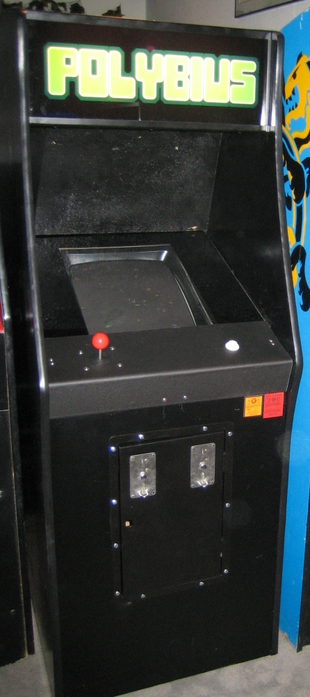

Polybius: An Evaluation.
December 6, 2024
COMP I Fall 2024 Semester Final - Luke Townsend
Video games are usually organized into different
genres: shooter, side-scroller, platformer, first-person, but what about psychedelic
stimulator? Let’s go back to 1981. In an unassuming arcade in a suburb of Portland
hides a game cabinet with no origin. Hidden in plain sight while teenagers, gamers,
and party-goers ramble around the gaming center; some try the new game and others
pass by it instead. Its existence is inherently mysterious. However, this game wasn't
like any other; it was deadly. Only one release, one name, one identity: Polybius.
The supposed title screen for Polybius, displayed on coinop.org's page dedicated to Polybius.
Not much is known about Polybius. Some articles tell of an addictive state as a side effect of playing Polybius to the point of severe exhaustion, illness, or even death [Zarrelli]. However, there are mainly two conspiracy theories surrounding Polybius. Either:
- It was a game developed by the U.S. Government to train individuals for recruitment into the U.S. military and was possibly part of Project MKUltra.
OR
- The game cabinet was invented by a man named Kurt Koller to promote his website, CoinOp.
One of many declassified MKUltra documents.
So, is there any evidence of Polybius’ existence, and which, if any, of these theories hold up?
First, an examination of the cabinet is paramount to learning its secrets. A deep dive is always helpful when researching any topic or subject. Looking into the Polybius conspiracy theory at first seems very big, but becomes very clear when examined. There are many things to observe: The supposed connection to MKULTRA, men in black tinkering around with and eventually taking the cabinet, the alleged injuries and side effects related to playing the game, mentions of special hardware incorporated into the game so that it could take control of your mind, etc. However, as stated earlier, it seems there are only two outcomes to this conspiracy, and there can only be one true answer in the end.
While looking at possible evidence of Polybius' existence, it is clear that this game cabinet is incredibly mysterious. Only a few cabinets at most were released. According to an article on atlasobscura.com, "Men in black suits opened the machine every week, recorded its data, and left, with no interest in its coins" and that it eventually "vanished without warning—taken by the men in black suits, leaving no record of its existence" [Zarrelli]. The only crumb of evidence that seems to exist is a dark screenshot of the supposed main menu. Truly, this cabinet is hiding something from us.
Investigating the folklore deeper, we discover that this cabinet is incredibly cruel, too. In the same article, Natalie Zarrelli claims that the cabinet's players "couldn’t stop playing, and began acting oddly: they were nauseous, stressed, had horrific nightmares. Others had seizures or attempted suicide, many felt unable to control their own thoughts" [Zarrelli]. Here, we realize that the cabinet is not only mysterious but very cruel. This cabinet wasn't only testing your skills in-game, but your real-world vitality, too.
A picture of a fan-made, replica Polybius cabinet made by Rogue Synapse. Picture taken by DocAtRS - Original photo, CC BY-SA 3.0, Link
This game cabinet was deceitful; a wolf in sheep’s clothing; a diamond in the rough, but not the kind of diamond you want to find. Even the game’s existence is deceitful. According to an article on inverse.com, the CoinOp page that listed Polybius “listed the game as having been copyrighted in 1981 (though no such copyright exists) and only briefly mentions ‘bizarre rumors’ about the title before classifying its history as ‘unknown.’” [Houlihan]. The company listed on the title screen, SinneSchloschen, isn’t a real company. No one knows where it could be or what its gameplay was really like. This game, along with even its own existence, is deceitful.
So, is this game even real? Evidence exists supporting both sides of the theory. Everything about this cabinet was mysterious, cruel, and deceitful. As mentioned before, the supposed eyewitness accounts testify that the game was real and that it had major effects on the people surrounding it, but those accounts are almost equally combatted by the evidence going against them [Zarrelli]. The existence of Project MKULTRA sure does make this conspiracy theory easier to believe, but Sinneschlochen was never a company, thus making this situation even harder to decipher. Whether Polybius is said to be either a deadly game cabinet or a story forged by a keyboard, one thing is certain: we may never know the truth about Polybius.
However, a deeper analysis of the two theories stated earlier is needed. The first theory claims that Polybius was created by the U.S. Government. An article on Atlas Obscura states that players “couldn’t stop playing and began acting oddly: they were nauseous, stressed, had horrific nightmares. Others had seizures or attempted suicide, many felt unable to control their own thoughts” [Zarrelli]. Although this evidence may be convincing, a question remains: where is all the other evidence supporting these claims? We only have eyewitness claims, which is helpful, but not enough. In conclusion, this theory has the potential to hold some ground, but there simply is not enough evidence to support this theory. To figure out the truth, a deeper search is needed.
The second theory states that Polybius was fabricated by a man named Kurt Koller to boost traffic to his website. Kurt’s website, coinop.org, is dedicated to being an archive of old arcade games. On August 3rd, 1998, Kurt created a completely new post on his website named “Polybius.” In his post, he states that he needs more information about the game cabinet and that only very little information is known about it [Koller]. Scrolling through his post, he states that he has acquired a ROM of the game. A ROM, or Read-Only-Memory, is a device used to store data permanently, compared to, for example, RAM, or Random-Access-Memory, which is volatile and loses its data when the device loses power [Tyson]. A game cartridge is an example of a ROM and its data cannot be changed, no matter what. The real kicker is that Kurt’s post about Polybius was last updated in 2009 [Koller]. It has been more than 15 years since the post was last updated, and there are no updates, no other confirmed ROMs, and no other trails of evidence to go down. It’s a dead end. Taking all of this evidence into account, it’s safe to assume that Polybius is fabricated and not real. In turn, this theory is now more likely to be true than the first theory.
A Super Mario Bros. 3 cartridge for the NES, an example of ROM(Read-Only-Memory).
Now that the deeper search is finished, it is safe to say that Polybius is likely fabricated. There simply is not enough evidence supporting the existence of Polybius and given that Kurt has been active on the internet since he last updated his post of Polybius with his own personal website, kurtkoller.com, there certainly isn’t something sinister about Polybius that would’ve suddenly made Kurt disappear. The trails vanished, the evidence wained, and the truth has likely shown itself. Although theory number two seems to be the better choice with the most evidence, there still is a minuscule chance that Polybius, somewhere, somehow, is sitting in the back of a facility just waiting to be uncovered. Unfortunately, the truth about the existence of this incredibly mysterious game cabinet may never reveal itself. However, the evidence we have now is leaning towards the nullification of a Polybius theory. Polybius, the world’s most mysterious game cabinet, may just be nothing more than a video game nothing-burger.